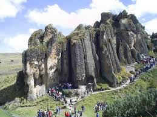
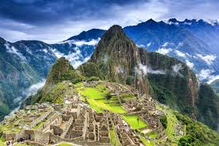
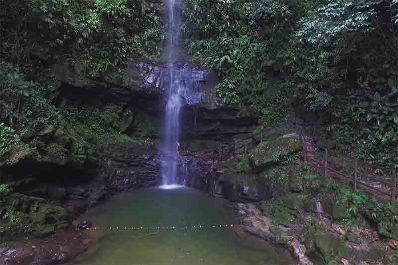
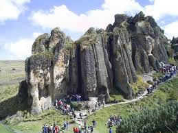
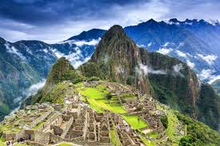
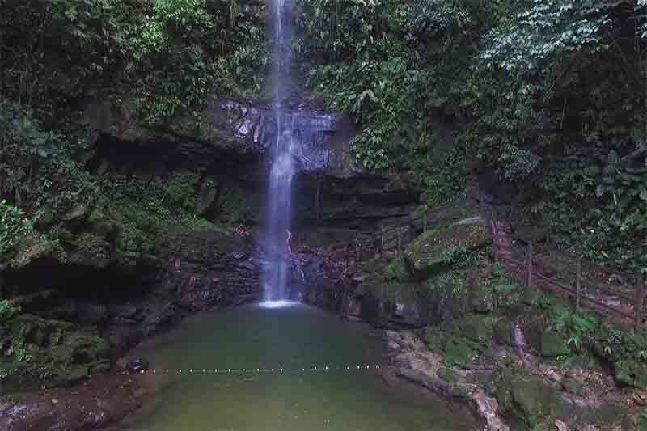

SITIOS TURÍSTICOS
| SITIO TURISTICO | DEPARTAMENTO | MUSICA TRADICIONAL | FOTO |
|---|---|---|---|
| Cumbe Mayo | Cajamarca/td> |  | |
| Ciudadela de Machu Picchu | Cusco |  | |
| Cataratas de Ahuashiyacu | San Martin |  | |
| Ruinas de Chan Chan | La Libertad |  |
|
| SITIO TURISTICO | DEPARTAMENTO | MUSICA TRADICIONAL | FOTO |
|---|---|---|---|
| Cumbe Mayo | Cajamarca/td> |  | |
| Ciudadela de Machu Picchu | Cusco |  | |
| Cataratas de Ahuashiyacu | San Martin |  | |
| Ruinas de Chan Chan | La Libertad | |
|